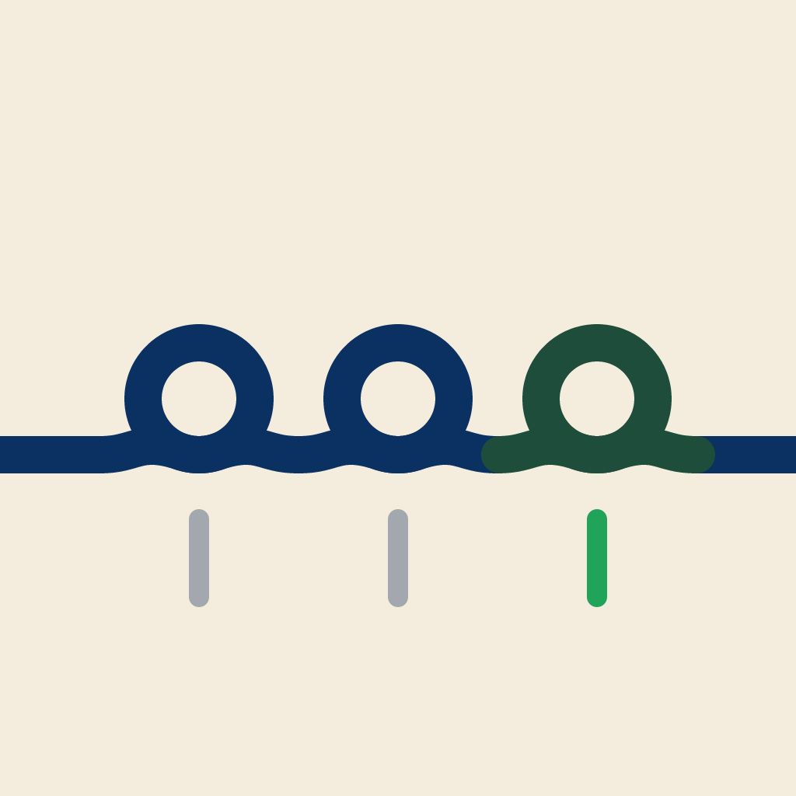

Knot
按一下 FoloToy AI Passport 卡片，记下这一秒；iPhone 碰一下卡片，记录就写进 Obsidian 当天的日记，之后慢慢补写。
1. 装 iPhone App
通过 TestFlight 安装。先在 App Store 装好 TestFlight，再点下面的链接。
在 TestFlight 中安装2. 给卡片刷固件
用电脑上的 Chrome 或 Edge，插线点一下就装好。
打开刷机页3. 打开 App，跟着教程走
第一次打开会教你卡片上每个键怎么用，最后选好你的 Obsidian 库。